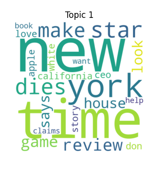

Introduction
This report analyzes a dataset of 4.5 million news headlines published between 2007-2022 from the top 10 news outlets by internet viewership in the United States. The goal is to explore patterns and trends in news headlines over time using unsupervised machine learning techniques like topic modeling and sentiment analysis.
Related Research
News headlines are one of the important factors which influence people’s opinions; Headlines act as gateways for articles. Analyzing patterns and trends in news headlines can provide valuable insights in understanding news media on internet and their evolution through time.
Machine Learning Techniques Used
This report performs topic modeling using Latent Dirichlet Allocation (LDA) to extract abstract topics and frequent words from the corpus of 4.5 million headlines. Also, sentiment analysis using the pretrained VADER lexicon is used to categorize headlines by emotional valence to track sentiment over time.
Dataset
The dataset comprises 4.5 million headlines published between 2007-2022 by the top 10 digital news outlets in the US. No additional demographic or other sensitive attributes are included. The dataset does not include the full text of the articles, which limits the context and depth of the analysis.
Evaluation and Findings: Topic Modeling (LDA)
Entertainment and Lifestyle
This topic includes words related to entertainment news, such as “star”, “dies”, “review”, “love”, “book”, etc.
Politics and Current Events
This topic focuses on political figures and events, with words like “trump”, “obama”, “biden”, “president”, “russia”, “china”, etc.
Business and Technology
This topic covers news related to the stock market, and technology, with words like “market”, “stock”, “million”, “tech”, “shares”, “data”, etc.
Social Issues
This topic encompasses social issues and public opinion, with words such as “people”, “community”, “rights”, “social”, “change”, etc.
Crime and Tragedy
This topic includes words related to crime and tragic events, such as “police”, “killed”, “attack”, “murder”, “death”, etc.
Sentiment Analysis

Using the VADER sentiment analysis tool, headlines were categorized by emotional valence over time. This reveals trends in public sentiment as reflected in news headlines from 2007 to 2022.
Sentiment Analysis by Outlet

This section visualizes the sentiment of headlines from different news outlets. The plot shows how sentiment varies between outlets and over time, offering insight into the sensational/emotional tone of each outlet.
Conclusion
Analyzing patterns in news headlines over the past 15 years using topic modeling and sentiment analysis provides valuable insights into the changing media landscape and public discourse. The findings highlight the evolution of major topics and sentiments, reflecting societal shifts and the influence of significant events.